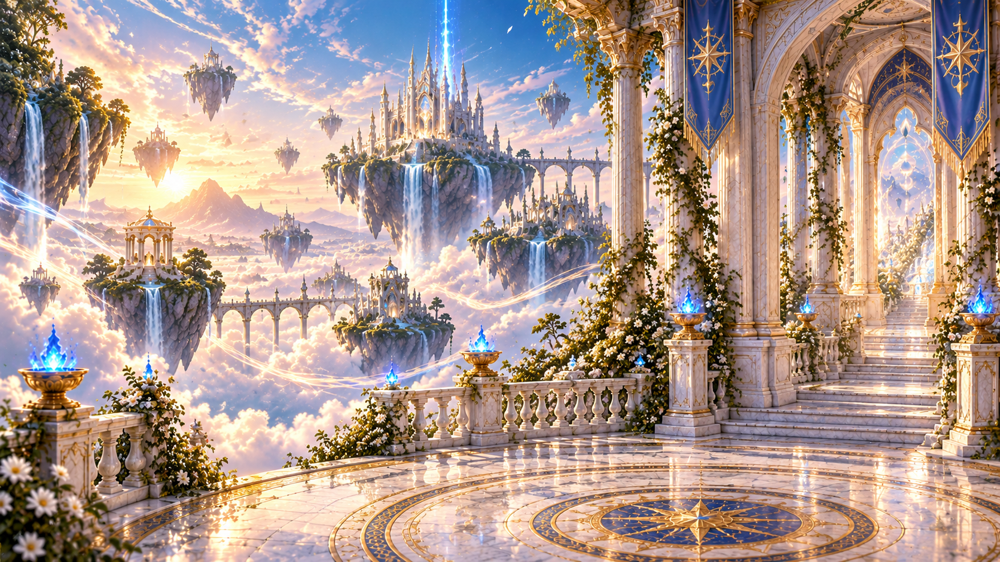
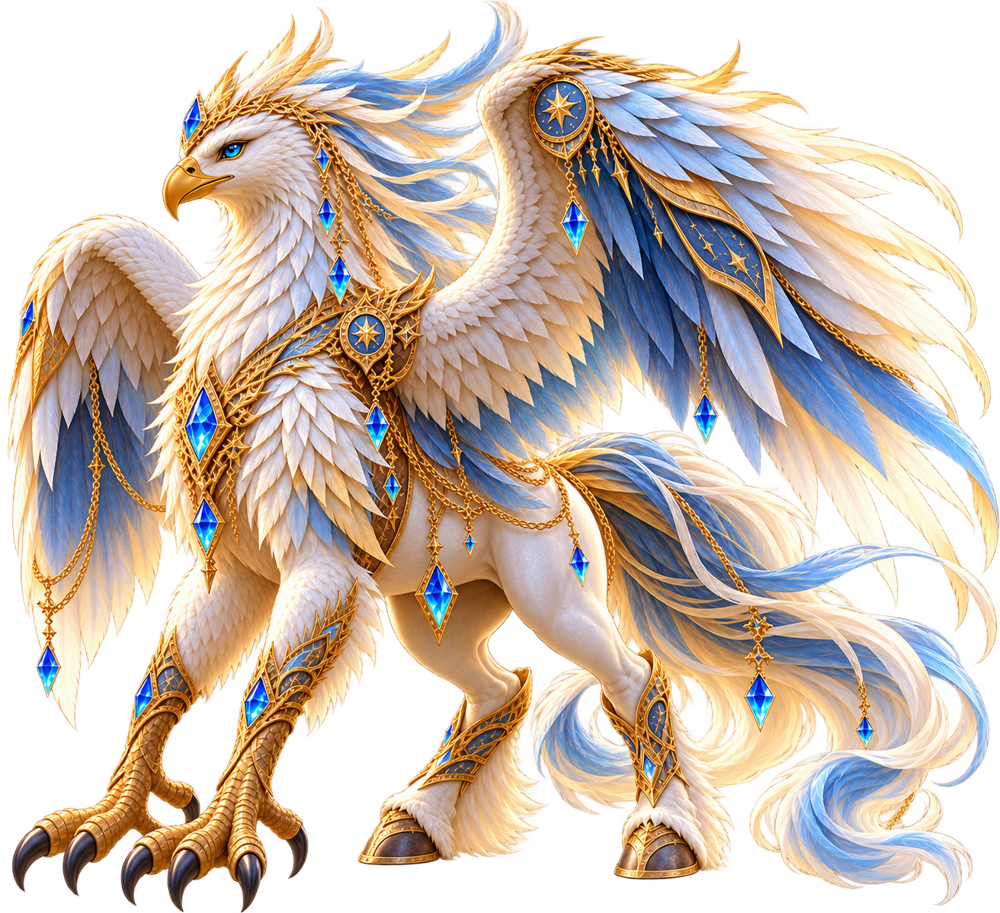

CHAPTER V – THE FIFTH LIGHT
Hippora's Realm
The Whispering Skies


The Mantle of the Four Winds
As you approach the ancient pedestal, the golden embroidery begins to shimmer.
Hippora: "This mantle was woven beneath the first silver moon. Ventlia entrusted it to those who would one day carry the harmony of the four elements."
"Its threads hold the memory of Water, Fire, Earth and Wind. At its heart shines the forgotten light of Aether."
"Wear it, young guardian. Let the winds recognize you as one of their own."
High above the clouds, where the winds carry the memories of ancient magic, the last guardian awaits.
Hippora, the eternal companion of Ventlia, stands before the Celestial Sanctuary.
Hippora: "The skies have forgotten their harmony, young guardian. The ancient winds no longer know their paths."
"Climb upon my back. Together, we shall awaken the winds of Ventlia."
"But remember... flight is not about control. It is about trust."
The Flight Trial
The winds of Ventlia await your courage. Guide Hippora through the skies and restore harmony to the ancient winds.
Use the arrow keys or WASD to guide Hippora.
Blessing of Wind
Beyond the celestial gateway, the ancient winds gather around you and Hippora.
Hippora: "You have trusted the winds, faced the storm, and followed the path that Ventlia once walked."
"The skies remember their harmony once more. You have earned my blessing, young guardian."

Celestial Feather
A feather carrying the ancient winds of Ventlia. One of the four sacred ingredients needed to awaken the forgotten light of Aether.